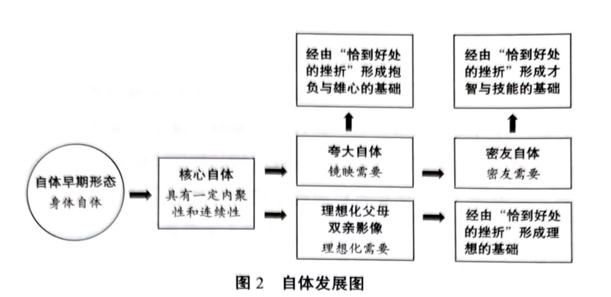

第四章 人格发展及病理
虚弱的自体
科胡特虽未曾特意撰写过关于人格心理学和发展心理学的书，但是在他的著作里广泛讨论了相关的观点。
科胡特的观点认为，自我个体性的产生和成长是以“自体”为基础的，但婴儿的自体是虚弱的。科胡特对自体的形成有一个形象的说明——婴儿仰望母亲，在母亲眼中看到自己。也就是说，婴儿自身体验到的自体与其存在感有关，在母亲注视和回应婴儿的过程中，母亲的关注能让孩子体验到自己的存在。如果母亲忽视对孩子的关注，孩子对自身的体验就是不确定的，往往不易于确立自身体验的边界，因而难以形成具有统整性功能和连续性体验的自体。
丹尼尔·斯特恩是一位发展心理学家，也是一名精神分析家和精神科医生。他在临床和儿童发展研究中提出了新的人格心理学与发展心理学理论，并在《婴幼儿的人际世界》（The Interpersonal World of the Infant）中系统地进行了阐述：人类出生时的自体是身体自体（body self）和显现自体（emergent self），此时人类主要是通过身体来体验自我的。当代发展心理学所建议的给婴儿做抚触，能很好地帮助婴儿体验自身，同时感知自身的边界（斯特恩，2017）。
人一旦能够感知自身的边界，便会逐渐形成统整性功能和连续性体验，进而体验到自己的存在。身体抚触对婴儿中枢神经和大脑的发育是十分重要的。一些实证研究发现，接受过身体抚触的孩子在长大之后，其智力水平及处理情感的能力比没有接受过身体抚触的孩子要好，在身体协调性等方面也表现得更好。而身体抚触最核心的意义在于帮助婴儿发展身体自体和显现自体。
除了身体自体和显现自体，斯特恩还提出了核心自体、主观自体、叙事自体等概念。
核心自体的建立是指个体能够把关于自身的感受广泛且连贯地组织在一起，并逐渐以连续性和统整性的方式体验自身和他人。核心自体破碎的人，如严重精神障碍患者，他们的自体感不具有连续性，是破碎和断裂的，而且其统整性功能也是碎裂的。例如，他们在某段时间里感觉到的是一个自己，在另一段时间里感觉到的则是另一个自己，同时也难以有效地统整和调节内在情绪。当病症发作的时候，患者就会出现这种情况。这种拥有“破碎自体”的状态，意味着其核心自体尚未形成，或在形成过程中存在严重缺陷。
主观自体的建立是指个体在主体间性关系中体验到自我的广泛联结及情感协调，并逐渐形成自我意识。
在叙事自体形成阶段，自我意识会清晰地出现，即个体认识到自己在世界中的存在，逐渐能用语言陈述“我是谁”“我是谁的儿子（或女儿）”“我来自何处”等，并在自我意识、象征化能力、自我反省、主体间性关系的综合作用下，逐渐形成语言的叙事自体。这就是科胡特之后的精神分析学者发展出的最重要的人格心理学和发展心理学理论之一。我们可以用这一自体的理论，来进一步观察和理解科胡特关于自体的论述。
科胡特所阐述的自体源于临床观察，并延续了弗洛伊德的人格心理学与发展心理学理论，即个体出生时，自身被全能性自恋所灌注；但随着个体的成长，婴幼儿会逐步发展出与他人的关系，并在与他人的关系中意识到自己的性别，进而发展出与不同性别的人的关系。这一过程涉及精神分析中重要的母婴发展时期和俄狄浦斯情结的发展时期。
科胡特注意到，当一个人开始从自恋发展出客体关系的时候，他的自恋并没有消失。个体在出生时有着全能自恋，并会提出需求；而后，他在生活中经历自体客体的回应，这种共鸣回应与“恰到好处的挫折”让他渐渐形成一种适应社会的适应性自体结构。这种心理结构慢慢成为自体的一部分，在保持自身活力的同时也具有良好的用于调整情绪的统整性功能。当自体发展到一定阶段，个体就从婴儿早期自体分散、感受稀薄的状态，慢慢经由自体客体的镜映的夯实，并通过“恰到好处的挫折”逐步形成稳定的自体感。也就是说，从早期连身体自体都尚不清晰、缺乏边界的感受开始，慢慢发展出身体自体，并最终成功形成核心自体。
科胡特所说的核心自体与斯特恩所说的有所不同。科胡特所说的核心自体主要是指流动性好且有连续性的自体，同时还具有内聚性和统整性，属于比较健康、具备一定胜任感的自体。当一类自体已具有一定的边界感，并开始发展核心的内聚性、统整性和连续性时，这类自体就是核心自体。核心自体构成了自体未来发展的基础。因此，科胡特的核心自体可能包含了斯特恩的核心自体和主观自体的主要特征。当然，从斯特恩的观点来看，五类自体除了按时间线发展，在发展过程中也会相互联结，因此身体自体和显现自体在核心自体与主观自体发展阶段仍会持续互相联结并共同发展。
三极自体与人的困扰
在科胡特所阐述的核心自体发展时期，孩子会逐步意识到自身的存在，而这种核心自体感会进一步发展为斯特恩所说的主观自体和叙事自体。因此，科胡特所说的核心自体应该类似于斯特恩所说的核心自体、主观自体，以及前期的叙事自体部分。通常，基于实证研究的发展心理学会发现，儿童的心理发展时间点普遍早于在临床建构的心理经验中所发现的心理发展时间点。
当代自体心理学不仅仅依靠精神分析本身的发展心理学，也重视以实证研究为基础的发展心理学。当一个人对于连续性的、统整性的自体有自身体验的时候，他就会产生对自身存在的意识。这种体验类似于我们在上课时的感受：专注听课时，我们可能意识不到自己的存在，但如果回顾一下课堂的状况，我们会突然意识到自己一直以坐着或站着的姿势在听课，自己的形象被呈现出来。这种对自身存在的察觉，就是自我意识的呈现。自我意识对于人类的意识发展十分重要，大约出现在孩子出生后的第 18 个月。
一个人如果没有自我意识，实际上和一只蟑螂没什么区别。对于一只蟑螂来说，人去拍它的时候，它不会恐惧死亡，它要么是做出天生的、本能的反应——“嗖”一下离开——要么当场被拍死。它在这个过程中不会产生自我意识。
自我意识对人类的意义在于，它让我们认识到自己是一个独立于环境的独特存在。我们和周围的环境是不同的，我们独立于周围环境而存在。这是自我意识所能产生的一种关键作用，而我们的核心自体也正是在这一意识中开始浮现的。
自体在意识中浮现后，也给我们带来了很大的问题，所以人类的进化是有代价的。当一个人开始意识到自我的时候，他就有一种对自身存在的主体体验和存在感，而存在感必定会带来另一种效果——人会开始思考关于死亡的问题，因为存在一定是和消亡联系在一起的。比如，孩子在 18 个月左右时开始出现自我意识，这种自我意识逐渐萌芽和发展。不用多久，到两岁左右，他们就会向父母提问。这时候他们的语言功能开始形成，他们可能会在这一阶段不停地追问：“爸爸妈妈，我会死吗？”或者，他们会询问“死是怎样的”等问题。这是儿童发展心理学中的一个常见现象——孩子在 2 岁时会增强关于生死的意识。随着孩子自我意识的整合、叙事自体的丰富化，以及对生死有了更为成熟的认知和理解，这一意识会慢慢消退，但会整合为生命存在意义的一部分。这也是发展心理学中的重要主题。
当自我意识产生之后，人对自身存在的感知会更为强烈。个体会随之出现科胡特所说的夸大自体的状态。

图 2 自体发展图
科胡特 1971 年在《自体的分析》中提出二极自体，即自体的两个面向：夸大自体（也称自恋自体）和理想化父母双亲影像，它们分别对应镜映移情和理想化移情。
在 1977 年出版《自体的重建》时，科胡特将其发展成三极自体（自体的三个面向），在二极自体的基础上分化出第三极——密友自体（也称孪生自体或另我自体）——对应密友移情。这三种自体分别发展出三种需要，即镜映自体客体需要、理想化自体客体需要和密友自体客体需要（参见图 2）。
什么是夸大自体？在核心自体中，一个人有了自我意识，他会慢慢感觉到自己的独立性，感觉到骄傲的自己和自己的夸大部分。在科胡特的早期理论中，夸大自体称为自恋自体（西耶哥，2005）。关于夸大部分，我们可以在研究婴儿或养育婴儿的过程中观察到一些现象。
例如，有的孩子需要父母的关注，当他独自玩耍时，他每隔一会儿就会叫妈妈或者叫爸爸。如果父母不回应他，他就会紧张或者不开心；但只要父母回应他一下，他就会安心地继续玩。父母的回应就是他需要得到的关注。
孩子在 2～4 岁阶段，有时候会用手捏碎小番茄，然后扔掉它们，并对此感到很开心。大人往往会阻止孩子，说这是在浪费食物，但此时孩子并没有浪费或节约的概念，他只是在体验夸大的游戏。这种体验可以给孩子带来胜任感，因为当孩子用手把小番茄捏碎的时候，他感受到的是一种掌控感。
孩子在这一阶段还会出现另外一些行为，例如当大人短暂离开时将整盒抽纸全部抽出来，扔得满地都是，甚至还会把它们全部撕成一条一条的。每当出现类似的情况，大人就会觉得孩子是在胡闹。但是在孩子的世界里，他充分体验了一种骄傲的、胜任的、夸大的感觉。科胡特把这种自体感的表现称为夸大自体。
在夸大自体中，孩子需要的是别人注意和肯定他的这种夸大。这是很重要的体验。
有的父母会问：“那当孩子捏小番茄或者撕抽纸的时候，我们不应该制止吗？”
当孩子出现这些行为的时候，我们固然要制止，但应避免用否定的方式制止。比如，若孩子要撕纸，我们可以为他提供一种替代物给他撕，而不是直接否定他，或指责他浪费。
我们注意到，孩子在活动中会反复寻求父母的关注和肯定，或希望父母能参与；当父母参与进来的时候，他会觉得很高兴，觉得自己被肯定了。有时候孩子也会测试父母，给父母出一些题目；有时候孩子会搬一些很重的东西，或者像参加阅兵的战士一样把腿抬得很高走路，这些都和夸大自体有关，都是希望获得周围人关注的行为。
弗洛伊德曾经举过一个例子。一个孩子在房间里叫姑姑，姑姑回应他说：“哎！我在这里。”孩子就放松了。
过一会儿他又叫姑姑。姑姑又回答：“我在。”
这样重复了很多次之后，姑姑就对他说：“你有什么事情吗？如果没有什么事，不要反复叫我。”
孩子说：“我没有什么事情，我只是想知道你在那里，你回应我，我就安心了。”
在这个过程中，孩子的行为是在寻求某种关注。当他觉得被关注的时候，他会感受到自身的自体感，也会产生某种稳定性和被关注的良好感觉，进而获得安全感——这对孩子的心理发展十分重要。
这就是科胡特所说的夸大自体的表现。那么夸大自体有什么样的需要呢？是镜映的需要，它需要被肯定、被关注。
在夸大自体出现的同时，也就是核心自体发展之后，实际上还存在另一个面向——一个以核心自体为基础、同步发展出来的自体面向，我们称之为理想化父母双亲影像。它意味着孩子希望和一个强有力的人在一起，通过这个过程，他能够获取力量，从而维持自身的稳定性。
科胡特认为，在早期发展阶段，孩子把自身的某些自恋部分投射于一些外在的、强有力的客体，以实现自身的某些体验。例如，孩子会觉得自己的父母很厉害，是无所不能的。
但是成年人都明白，父母并非无所不能，他们在面对这个世界的时候会遇到很多困难，也有束手无策的时候。但是对于幼小的孩子来说，这些是不可想象的。
在孩子的主观幻想中，父母能做世界上所有的事情，想要什么就有什么，还能保护自己，是非常强大的存在。例如，孩子尝试搬“重物”，但试半天也搬不动，这时候妈妈走过去，只用一只手就轻松地将“重物”拎了起来；孩子瞬间就会将理想化的影像投注在妈妈身上，认为她有无穷的力量。这帮助孩子体验到理想化父母双亲影像的自体客体的感受——“就是因为我和有力量的人在一起，所以我也是有力量的”。
但是需要区分的是，这样的幻想如果出现在成人身上（例如“我爸是李刚”），就是一种病理性现象。比如，成人阶段出现的某些类似于理想化体验的奇特行为，例如过度追星，实质上是对理想化的追寻，一旦过度便具有病理特点。而它如果出现在四五岁的学龄前儿童身上，就是一种健康、正常的现象。这代表这名儿童的理想化父母双亲影像有助于维护他的自体，他通过这种体验能够获得存在感、意义感和安全感。这种理想化父母双亲影像，也是自恋的一条发展主线。自恋实际上就是充斥在自体当中的，所以自体也有自恋这一本能能量。
但在科胡特晚期的观点中，这类自恋需要被称为自体客体需要。在理想化父母双亲影像这一自体客体的体验过程中，孩子体验到的自身的内聚感、统整感，实则是从他人身上体会到的自己。
夸大自体的镜映自体客体需要，会经由恰到好处的挫折逐渐减弱并整合，而在理想化父母双亲影像以及由此产生的理想化自体客体需要逐步减弱后，个体还会出现另一个新的发展面向，即科胡特曾提及的第三极自体面向——密友自体。这一自体面向的现实感要优于前两种。我们将这一自体面向称为密友自体，其发展出的需要即密友自体客体需要。
密友自体客体需要通常体现在个体发展过程中的一些伙伴关系，或与次要养育者的关系中。例如，在欧美国家的圣诞节期间，当长辈们制作节庆糕点时，孩子也会拿一块面团在旁边揉捏。在这个过程中，孩子会获得一种很重要的情感体验，感觉到自己也在参与创造。
在我国也有类似的现象：北方家庭可能会让孩子参与包饺子、做馒头，在南方可能变成包馄饨等。孩子总是十分乐于与爷爷、奶奶、外公、外婆等一同进行这类活动。孩子虽然并没有做太多，但是对这类活动很热衷、很投入。因为在做这些事情的时候，孩子能充分感觉到某种信任，会觉得自己正在与他人一起完成某项任务，并因此感到十分开心。我们称这种感受为密友自体客体需要，即与密友自体相关的、孪生的自体客体需要。
有时孩子会期盼包饺子、包馄饨，或者期待能吃到包有钱币或糖的特殊馅料。如果恰好吃到了，孩子便会格外开心，因为这同样让他感受到了自己的参与。
科胡特把密友自体客体需要看作才智与技能发展的基础，即一个人在未来成长中的创造力、才智与技能发展的重要心理基础。
此外，密友自体客体需要还包含一些其他情况。例如，孩子从两三岁起就开始拥有小伙伴，随着年龄增长，伙伴的数量也会逐渐增多。孩子与小伙伴的相处构成了其部分人际关系。这类人际关系并不深刻，孩子们多是因分享玩具或零食而成为朋友。例如，有的孩子从幼儿园放学后会说他和某个小朋友“结婚”了，这很可能只是代表他和这个小朋友有共同喜爱的玩具。
这种与伙伴共处的密友自体客体需要可以帮助个体稳定其在发展过程中的自体感。密友自体客体需要是通过伙伴关系和共同活动的过程来满足的。
如果个体在自体的三个面向上的需求都能得到他人和周围环境的良好回应，他便能发展出较好的自体感和自体内聚性。同时，父母要在孩子的成长中逐步撤出对孩子的关注——一般越小的孩子，父母关注得越多，比如对待两岁以前的孩子，我们通常主张要无条件地满足他。
随着孩子长大，其需求变得越来越复杂，同时其自主能力也逐渐增强。父母让孩子做力所能及的事情，比如独立刷牙、上厕所，这正是逐步撤出关注的表现。撤出要适度，应采用“恰到好处的挫折”的方式逐步完成，而非突然全部撤出。
父母应让孩子自己去尝试，耐心地教他怎么做，并静待他慢慢掌握，再慢慢撤出。这样，孩子便有心理空间去调用以往获得关注以及自体客体需要被满足时的经验来调整自己。虽然孩子一开始会有些紧张，但是他可以凭借已有的稳定性来调整自己的情绪，让自己逐步形成更好的、更稳定的、更具有内聚性的心理过程，去完成一些力所能及的任务。
举一个例子。很多人虽然学了英语，但是与外国人对话时，在表达上总有些不确定的地方，这个时候他们就会感到心虚。实际上，第一次见到外国人，或者第一次去国外旅行，要用英语与人交流时，多数人是会紧张的。但是如果你和外国人说话的时候，互相能够听懂，你们在语言上就处于同频状态。在这种情况下，如果你偶尔有一句听不懂，你就会调用之前大部分听得懂的经验，让自己保持稳定，换种方式继续和对方沟通。比如你说的一个词语对方没听懂，那就尝试用另一个词语解释一下，对方可能就懂了。这种方法来自你的内部，是通过以往成功经验的拓展而得到的经验。当你调用之前的成功经验再次成功沟通的时候，你在英语对话方面的自体感会变得更稳定，进而能够更加自如地用英语对话。
婴儿在自体客体回应逐步撤出的过程中经历的情况也与之类似。例如，一个孩子原本觉得父母无所不能，但突然有一天，父母表示身体不舒服，要休息几天。这对孩子来说是一个刺激，但并不是创伤性刺激，孩子会由此发现强大的父母也有虚弱的时候。鉴于此，他便会在父母虚弱的时候调用此前积聚的内在力量，逐步调整对父母的关注。于是，即使在父母生病的时候，孩子感觉到的自己也是稳定的——这是由恰到好处的挫折所产生的。孩子会变得更有社会适应力，也变得更独立（巴史克，2000）。
科胡特认为，这种经由恰到好处的挫折来实现的蜕变性内化是一项终身任务。人生的每个阶段都有其相应的任务，甚至在临终前，一个人仍会有自体客体需要。例如，一个人在去世前会回顾他的一生是否有意义，如果他认为生活是有意义的，他的自体感就会比较稳定。
因此科胡特提出，对于自体客体的共鸣性需要是人类的一种基本情感需求。一个人的自体感越内聚、越统整，自体客体的功能就越好，这个人人际交往的能力就越强、自由度也越大。
如果一个人有边缘型人格障碍，那么他很容易投入一段感情，但这段感情出问题的概率很高。一旦这种情感关系出现问题，他就会像失去了主心骨一样；只要能挽回关系，对方让他做什么都可以。这就是自体感虚弱的表现。
而一个自体感良好的人，即使在一段投入很多的感情中最终失败了，他仍能保持足够的稳定感。他可能会经历一时的、短暂的痛苦，但能够比较快地化解痛苦，并以一种比较健康的方式重新寻求一段更适合自己的情感关系。
共鸣、无回应、曲解与覆盖
自体客体的共鸣性对自体而言是非常重要的部分。同样地，这种共鸣性对婴儿也很重要。
多项依恋实验表明，8 个月以前的婴儿，年龄越小，与母亲之间的情感互动性越高，即母亲露出什么表情，婴儿也会做出类似的表情；如果母亲的表情总体上偏正向，婴儿的表情也会偏正向。根据这些实验可推测，婴儿获得的共鸣性越高，在后续成长中的安全感通常会越强，且成年后心理问题的发生率可能也越低。
多项持续数十年、历经三四代心理学家的纵向研究发现，婴儿 0～8 个月的发展情况与其成年后是否出现心理问题密切相关。
然而，这种共鸣性关系有时并未得到很好的建立，这往往是因为父母自身存在困难和问题。自体心理学认为，有的问题是在养育过程中出现的。常见的有两种典型情况：一种是孩子被忽视，此时，孩子处于无回应的状态，即孩子完全感觉不到自体客体的回应；另一种是孩子被曲解或者覆盖。
覆盖是指父母以自己的理解代替孩子的理解。例如，有个孩子在家中闻到了一股淡淡的臭味，他告诉了妈妈。但是妈妈没有闻到。过了几周，妈妈打扫阳台的时候发现了一只散发着臭味的死老鼠。这时候孩子对妈妈说：“你看，我就说有一股臭味吧，就是这只死老鼠发出来的。”
妈妈回应道：“是不是你搞的怪？你吃的东西把老鼠引进来了。”
妈妈此时的回应就属于曲解或覆盖。
这个孩子原本是想证明自己在妈妈发现老鼠之前闻到臭味的感知是对的，但是妈妈的话曲解了孩子的体验。孩子说出自己的体验是希望被认可，而妈妈为了防御，避免自己丢脸，便指责孩子在搞怪，曲解了孩子的体验。
分裂的形成：潜抑
当孩子被妈妈曲解时，他无法辩驳，只能压抑自己的感受。自体心理学认为，这些感觉被潜抑后，并非就此消失，而是进入无意识中，且总有一天会重新浮现。
这些感觉一旦被压抑至无意识中，就难以被整合至意识层面。但是当它们再一次浮现的时候，若家庭氛围不允许其表达，即使争辩也没有用，那么被压抑的部分就会慢慢被遗忘，从而形成潜抑。如果被遗忘的部分活力很强，并且在当时引起了强烈的情绪，这些被潜抑的情绪就有可能在个体的青春期或成年期置换为症状。由于在常规渠道被潜抑，因此它们只能通过其他方式表现出来。
科胡特将这一过程称为“分裂的形成”。这一分裂称为水平分裂，即潜抑。所谓潜抑，就是个体的某种感受或者情绪被压抑至无意识层面并被遗忘的过程。
那么，在这一过程中，被潜抑的是什么呢？是自体客体需要。它可能是与夸大自体相关的镜映自体客体需要，也可能是理想化自体客体需要，或密友自体客体需要。
水平分裂和垂直分裂
每个人一生中都会有许多被压抑、潜抑的东西，关键在于这些压抑、潜抑的东西是经由恰到好处的挫折产生的，还是经由创伤性挫折产生的。由过度的挫折或者创伤性挫折所造成的潜抑，置换为症状的可能性通常更高，致病的可能性也更高。而非创伤性的挫折所造成的潜抑，致病的可能性很低，甚至几乎没有。
除了水平分裂，科胡特还提出了另一种病理过程——垂直分裂。
水平分裂是指潜抑的过程，由于相关内容被潜抑在水平线之下，所以称水平分裂；而垂直分裂是指在水平分裂旁边出现了另一个分裂过程（西耶哥，2005）。
例如，一个人前后说的话不一致，会让人明显感觉到他是自相矛盾、不连贯的。一般人在出现这种不一致的表达时，会感到些许害羞，并表示歉意，承认之前说错了。但是有的人会若无其事地说“我之前就是这么说的”，即便所有证据都证明其表达前后不一致。这种明显且反复出现的自相矛盾、自我否认的表现，称为垂直分裂。
出现垂直分裂病理过程的人，往往在童年经历潜抑过程的同时还产生了巨大的羞耻感。在这种情况下，他在压抑自身感受的同时也将体验一同隔离了。
这类个体在表述时，仿佛突然进入了另一个空间，经历的是另一种体验。这与先前的体验没有直接的连贯性，同时他也拒绝承认别人所看到的连贯性，而只认同自己的部分。当别人摆事实、讲道理的时候，他就会说别人是在胡说八道，并拒绝回答别人的问题。
类似案例很常见。例如，A 女士成名致富后，竟然去商店里偷了一件千元以下的衣服。以她的收入水平，她完全没有必要这样做。但事情真实发生了，她将店里的衣服穿在身上，旁若无人地走了出去，并且被店员发现后还拒绝承认。这就是典型的垂直分裂的过程。
这一过程与 A 女士早期的生活经历有关。在贫穷的成长环境中，她沾染了小偷小摸的坏习惯。无论从社会道德还是价值观的角度来看，这都不是什么好事。但从个体的角度分析，这类个体在早期的生活中，遭受过一些巨大的、和羞耻相关的创伤，这使其与自身感受产生了一种隔离，并借此保护自己。
在自体心理学中，伯纳德用“病理性适应”来理解这一现象，即来访者在与环境的冲突中发展出的、不得已的自我保护策略。在科胡特和伯纳德之后，这一观点极大地改变了自体心理学家观察来访者动机的视角。
在临床上，咨询师如果碰到水平分裂的来访者，工作难度通常较低。如果咨询师碰到垂直分裂的来访者，对方可能会高高在上地俯视或者贬低咨询师，这时咨询师会感觉自己毫无价值，处理来访者的问题会比较困难。面对垂直分裂的来访者，在最初的一两年，咨询师往往只是处理基本的关系联结，很难追求和探索更深入的内容。因为一旦试图深入，马上就会被来访者“弹开”，而这种防御并非有意识的，而是下意识的。
如果遇到垂直分裂的来访者，我们要耐心地与他逐步建立联结。建立联结时应根据来访者的进展节奏自然地推进，这与处理水平分裂的方式差异很大。来访者若有垂直分裂的病理表现，则必定存在水平分裂；但反之，若来访者存在水平分裂，却未必代表他存在垂直分裂。在科胡特的著作中，我们可以读到很多垂直分裂的典型案例。
附：图 2 图示文字
- 自体早期形态：身体自体
- 核心自体：具有一定内聚性和连续性
- 夸大自体：镜映需要 → 经由“恰到好处的挫折”形成抱负与雄心的基础
- 理想化父母双亲影像：理想化需要 → 经由“恰到好处的挫折”形成理想的基础
- 密友自体：密友需要 → 经由“恰到好处的挫折”形成才智与技能的基础
- 箭头关系：自体早期形态 → 核心自体 → 夸大自体／理想化父母双亲影像 → 密友自体；夸大自体、理想化父母双亲影像、密友自体各自向上指向对应的“经由恰到好处的挫折……”结果框。